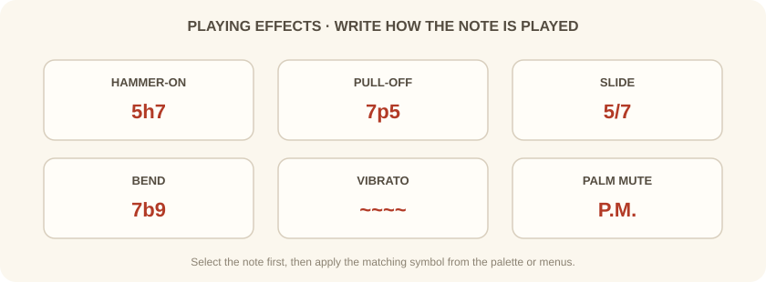
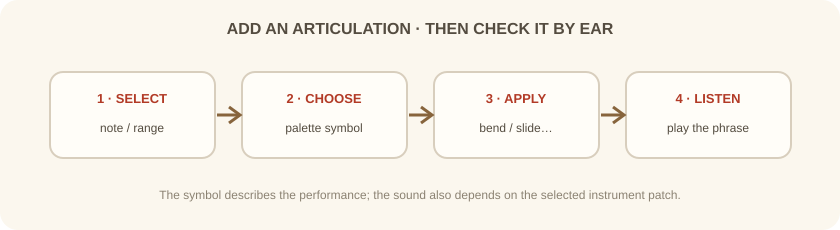

دورهٔ فرعی · Guitar Pro · جلسهٔ چهارم از شش
شمارهٔ فرت و ارزش زمانی، نت را مشخص میکنند؛ علائم اجرایی نشان میدهند نوازنده آن نت را چگونه به صدا درآورد.
بخش اول
Hammer-on و Pull-off دو نت را با اجرای پیوستهٔ دست چپ به هم وصل میکنند. Slide حرکت پیوسته میان دو فرت را نشان میدهد. Bend زیر و بمی نت را با کشیدن سیم بالا میبرد و Vibrato نوسان ظریف زیر و بمی میسازد.
Palm mute صدای نت را با تماس کنارهٔ دست با سیم کوتاه و خفه میکند. نمادهای دقیق در تبلچر، نتنویسی استاندارد و صدای پخش ممکن است شکلهای متفاوت داشته باشند.

بخش دوم
نت یا محدودهٔ موردنظر را انتخاب کن، سپس نماد مناسب را از پالت ویرایش یا منوی مربوط به نت و افکتها بردار. بعضی علائم پنجرهٔ تنظیم باز میکنند؛ برای نمونه، مقدار بند را مشخص کن.
پس از افزودن علامت، عبارت را پخش کن و هم ظاهر نتنویسی و هم صدای حاصل را بررسی کن. نماد درست بهتنهایی صدای ساز را تعیین نمیکند؛ ساز و صدای انتخابشده نیز مهماند.

بخش سوم
روی یک مسیر گیتار، عبارت 5–7–5–7 را بساز. روی رفت از ۵ به ۷، Hammer-on بگذار؛ روی برگشت، Pull-off. عبارت را پخش کن و نمادها را در تبلچر بازبینی کن.